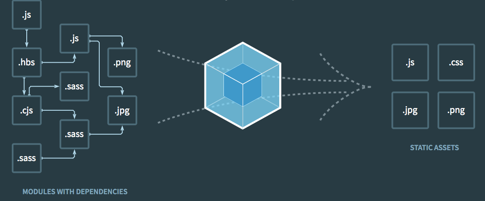

Webpack es un empaquetador de módulos estáticos para aplicaciones JavaScript modernas. Cuando webpack procesa tu aplicación, internamente construye una gráfica de dependecia que transforma cada módulo que necesita tu proyecto y genera uno o más bundles.
A continuación se muestra el paradigma tecnológico de Webpack:
En la página web de Webpack hay documentación detallada para conocer todas las características. Puedes acceder haciendo click aquí.